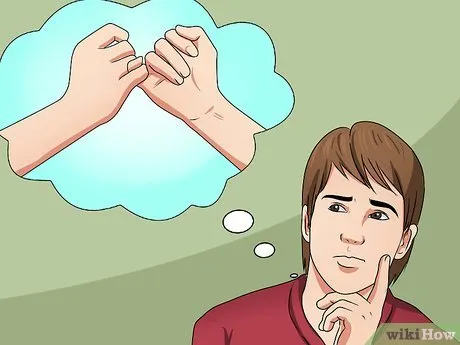

The Scenario
- You and a friend are shipwrecked on a desert island. Only a limited amount of food remains.
- Your friend is injured and unlikely to survive until rescue. He tells you he has found treasure worth millions.
- He asks you to promise that you will give the money to his nephew his only living relative.
- You promise him you will do exactly as he requests. Your friend passes away, and you are eventually rescued.
- You seek to fulfill the promise, but discover the nephew is a drug addict and gambler leading an extravagant, wasteful lifestyle.
- You notice a TV advertisement for a famous children's hospital that conducts research on rare childhood cancers leukemia and other illnesses.
- Since your friend is dead, you are the only one who knows about the money and the promise.
Question: What should you do with the money? Why would your choice be the right thing to do?
The Three Ethical Choices
Deontological

Keep the Promise
Give the money to the nephew as promised. Honor the duty to your dying friend — the moral worth of the action lies in keeping your word, regardless of outcome.
Utilitarianism
Donate to the Hospital
Give the money to the children's hospital. This produces the greatest good for the greatest number, alleviating suffering and funding life-saving research.
Egoism
Keep the Money
Keep the treasure for yourself. As the only person who knows of the promise, looking out for your own self-interest is the rational choice.
10Utilitarianism
4Deontological
4Egoism
Survey Results — Votes by Choice
Utilitarianism
Deontological
Egoism
Percentages of Responses
Utilitarianism — 56%
Deontological — 22%
Egoism — 22%
Reflection
- The majority of the 18 respondents chose utilitarianism, reasoning that donating to the children's hospital would produce greater overall good. They argued that giving the money to a drug addict and gambler would be wasteful and ultimately harmful, while the hospital could save many lives and fund critical research.
- The four respondents who chose deontology emphasized the binding duty of a deathbed promise. They focused on the act itself keeping the dead man's one's word rather than the consequences, and expressed interest in seeking ways to also change the nephew's behavior.
- The four respondents who chose egoism reasoned that since no one else knows of the promise, keeping the treasure for oneself is the rational, self-interested choice.
- Interestingly, some respondents considered a compromise splitting the money between the nephew, the hospital, and themselves though this neither fully honors the promise nor maximizes overall benefit, raising questions about what the right solution truly is.